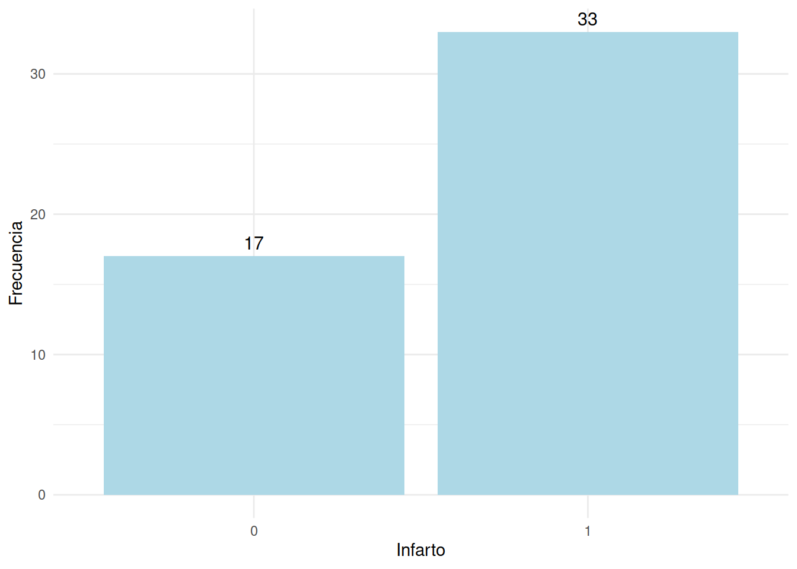

En un estudio médico fueron registrados datos de pacientes propensos a un infarto. Cada paciente fue identificado mediante un número de identificación (id) y se recopiló información sobre su edad , nivel de actividad física (actividad), antecedentes de angina (angina) y presión arterial (presion). El objetivo del estudio fue el de analizar cómo estas variables están relacionadas con la ocurrencia de infartos cardíacos (infarto).
Se requiere ajustar un modelo logit para predecir la probabilidad de infarto en función de las características recogidas de los pacientes
| id | edad | actividad | infarto | angina | presion |
|---|---|---|---|---|---|
| 1 | 52 | 1 | 1 | 1 | 0 |
| 2 | 66 | 2 | 1 | 1 | 0 |
| 3 | 56 | 2 | 1 | 1 | 0 |
| 4 | 57 | 2 | 1 | 1 | 0 |
| 5 | 42 | 1 | 1 | 1 | 1 |
| 6 | 62 | 0 | 1 | 0 | 1 |
Inicialmete se revisa las relaciones existentes entre las variables contenidas con respecto a la variable dependiente
summary(corazon[,2:6]) edad actividad infarto angina presion
Min. :35.00 Min. :0.0 Min. :0.00 Min. :0.00 Min. :0.00
1st Qu.:42.50 1st Qu.:1.0 1st Qu.:0.00 1st Qu.:1.00 1st Qu.:0.00
Median :51.00 Median :2.0 Median :1.00 Median :1.00 Median :1.00
Mean :50.42 Mean :1.6 Mean :0.66 Mean :0.86 Mean :0.52
3rd Qu.:56.00 3rd Qu.:2.0 3rd Qu.:1.00 3rd Qu.:1.00 3rd Qu.:1.00
Max. :76.00 Max. :3.0 Max. :1.00 Max. :1.00 Max. :1.00 # Instala y carga el paquete ggplot2 si aún no lo has hecho
# install.packages("ggplot2")
library(ggplot2)
# Ejemplo de datos (sustituye "data" y "frecuencia" con tus propios datos)
data = table(corazon$infarto) %>%
as.data.frame()
# Crea el gráfico de barras con ggplot2
grafico_barras <- ggplot(data, aes(x = Var1, y = Freq)) +
geom_bar(stat = "identity", fill = "lightblue") + # Barras azul claro
geom_text(aes(label = Freq), vjust = -0.5, color = "black", size = 4) + # Etiquetas de frecuencia encima de las barras
labs(x = "Infarto", y = "Frecuencia") + # Etiquetas de ejes
theme_minimal() # Tema minimalista
# Muestra el gráfico
print(grafico_barras)
# Crear variables dicotómicas para la variable "actividad"
corazon$a_d<- factor(corazon$actividad, levels = 0:3, labels = c("ninguna", "minima", "moderada", "mas_que_moderada"))
corazon$a_d <- relevel(corazon$a_d, ref = "ninguna")
# Ajustar un modelo logit
modelo1 <- glm(infarto ~ edad + a_d + angina + presion, data = corazon, family = binomial(link = "logit"))
# Ver un resumen del modelo
summary(modelo1)
Call:
glm(formula = infarto ~ edad + a_d + angina + presion, family = binomial(link = "logit"),
data = corazon)
Coefficients:
Estimate Std. Error z value Pr(>|z|)
(Intercept) 4.15175 2.73523 1.518 0.1290
edad -0.03838 0.03880 -0.989 0.3226
a_dminima 1.23798 1.07218 1.155 0.2482
a_dmoderada 1.30852 0.95666 1.368 0.1714
a_dmas_que_moderada 1.22074 1.12652 1.084 0.2785
angina -2.11143 1.40812 -1.499 0.1338
presion -1.17841 0.70273 -1.677 0.0936 .
---
Signif. codes: 0 '***' 0.001 '**' 0.01 '*' 0.05 '.' 0.1 ' ' 1
(Dispersion parameter for binomial family taken to be 1)
Null deviance: 64.104 on 49 degrees of freedom
Residual deviance: 55.662 on 43 degrees of freedom
AIC: 69.662
Number of Fisher Scoring iterations: 5# Realizar selección de variables paso a paso (stepwise)
modelo2 <- step(modelo1, direction = "both", trace = 0)
# Ver un resumen del modelo seleccionado
summary(modelo2)
Call:
glm(formula = infarto ~ presion, family = binomial(link = "logit"),
data = corazon)
Coefficients:
Estimate Std. Error z value Pr(>|z|)
(Intercept) 1.3350 0.5026 2.656 0.00791 **
presion -1.1809 0.6383 -1.850 0.06430 .
---
Signif. codes: 0 '***' 0.001 '**' 0.01 '*' 0.05 '.' 0.1 ' ' 1
(Dispersion parameter for binomial family taken to be 1)
Null deviance: 64.104 on 49 degrees of freedom
Residual deviance: 60.453 on 48 degrees of freedom
AIC: 64.453
Number of Fisher Scoring iterations: 4# Ajustar un modelo logit
modelo3 <- glm(infarto ~ edad, data = corazon, family = binomial(link = "logit"))
summary(modelo3)
Call:
glm(formula = infarto ~ edad, family = binomial(link = "logit"),
data = corazon)
Coefficients:
Estimate Std. Error z value Pr(>|z|)
(Intercept) 1.43942 1.65623 0.869 0.385
edad -0.01533 0.03206 -0.478 0.632
(Dispersion parameter for binomial family taken to be 1)
Null deviance: 64.104 on 49 degrees of freedom
Residual deviance: 63.875 on 48 degrees of freedom
AIC: 67.875
Number of Fisher Scoring iterations: 4